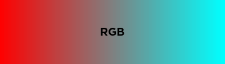
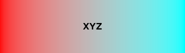
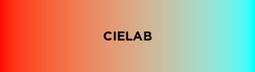
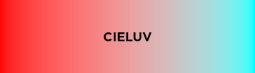

Color¶
Color is a Roblox Luau library for color management and manipulation, inspired by chroma.js.
Installing¶
The module is available in the library here if you want to install it using the Toolbox. You can also grab a release from GitHub and install it manually.
If you know how to use Rojo, you can build the latest code from the development branch to get the newest features. Keep in mind that this is development code, and things can break or change quickly.
The library has two parts: the Color module and the Gradient module. You can access them using [Module].Color and [Module].Gradient.
local ColorLib = require(...)
local Color = ColorLib.Color
local Gradient = ColorLib.Gradient
Conversions¶
Colors can be constructed from different color types, including hex strings, HSB/L, and L*a*b*. You can use Color.from or Color.from[ColorType] (e.g. Color.fromHex).
There are also a few additional constructors:
Color.new, which is equivalent toColor3.newColor.randomfor making random colorsColor.grayfor making greyscale colorsColor.namedfor referencing CSS colors
local pink = Color.fromHex("#ff69b4")
local blue = Color.from("HSB", 240, 1, 1)
local yellow = Color.fromLab(0.97139, -0.21554, 0.94478)
local newYeller = Color.fromBrickColor(BrickColor.new("New Yeller"))
local white = Color.new(1, 1, 1) -- or Color.gray(1)
local hotpink = Color.named("hotpink")
Likewise, you can also convert Colors to various color types, using Color.to or Color.to[ColorType] (e.g. Color.toHex). You can also get the RGB components of a color using Color.components.
local blue = Color.new(0, 0, 1)
print(blue:toHex()) --> "0000ff"
print(blue:toHSB()) --> 240, 1, 1
print(blue:to("Lab")) --> 0.32297, 0.79188, -1.07860
print(blue:components()) --> 0, 0, 1
Interpolation¶
Color interpolation in RGB (e.g. using Color3.Lerp) can result in grey or dark intermediate colors. This can be avoided by interpolating in a perceptually-uniform color space such as CIELAB or CIELUV, or by doing a "linear RGB" interpolation in XYZ. You can interpolate colors using Color.mix.
local red = Color.named("red")
local aqua = Color.named("aqua")
red:mix(aqua, 0.5)
red:mix(aqua, 0.5, "XYZ")
red:mix(aqua, 0.5, "Lab")
red:mix(aqua, 0.5, "Luv")
Here are images of what these interpolations look like:




Miscellaneous¶
The library includes some general-purpose manipulation functions:
Color.invertfor inverting colorsColor.brightenandColor.darkenfor making colors brighter or darkerColor.saturateandColor.desaturatefor (de)saturating colorsColor.blendfor blending colors
It also includes some functions which can be used for accessibility:
Color.luminancefor calculating the relative luminance of a colorColor.contrastfor calculating the contrast ratio between colorsColor.bestContrastingColorfor determining the color with the highest contrast ratio
There are also functions that don't fall into a general category:
Color.deltaEfor calculating the difference between colorsColor.harmoniesfor calculating harmonious colors
Gradients¶
Gradients are similar in construction and behaviour to ColorSequences. They can be used to generate intermediate colors or ColorSequences so that they can be used in places where they're required, such as ParticleEmitters or UIGradients.
A Gradient can be constructed using an array of "gradient keypoints", which is just a dictionary with a Time and Color field, similar to the Time and Value fields of a ColorSequenceKeypoint. The constructor for this method is Gradient.new.
local keypoints = {
{Time = 0, Color = Color.grey(0)},
{Time = 0.25, Color = Color.grey(0.5)},
{Time = 1, Color = Color.grey(1)}
}
local gradient = Gradient.new(keypoints)
You can also construct a Gradient with a list of Colors using Gradient.fromColors. This creates a gradient where the colors are equidistant from each other.
local gradient = Gradient.fromColors(
Color.named("red"),
Color.named("green"),
Color.named("blue")
)
Finally, the constructor Gradient.fromColorSequence creates a gradient from a ColorSequence.
local cs = ColorSequence.new(
Color3.new(0, 0, 0),
Color3.new(1, 1, 1)
)
local gradient = Gradient.fromColorSequence(cs)
Generating colors from a gradient is similar to mixing colors, using Gradient.color. If you need a list of colors, you can use Gradient.colors. If you need a ColorSequence, you can use Gradient.colorSequence.
local gradient = Gradient.fromColors(
Color.named("red"),
Color.named("green"),
Color.named("blue")
)
print(gradient:color(0.6, "XYZ"):toHex()) --> "00737c"
print(gradient:color(0.6, "HSB", "Increasing"):to("Hex")) --> "00993d"
-- generates a list of 50 equidistant colors on the gradient
gradient:colors(50, "XYZ")
-- generates a ColorSequence using the maximum number of keypoints (currently 20)
gradient:colorSequence(nil, "XYZ")